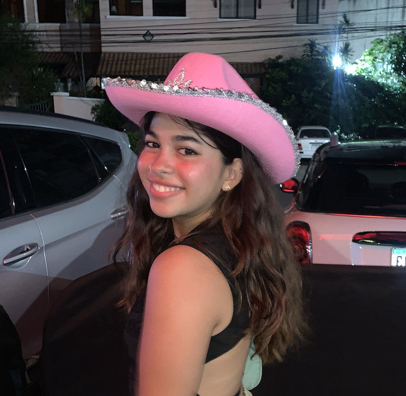

Paola Ran
¡Hola! Me llamo Paola Ran, tengo 21 años y soy estudiante de tercer año de Ingeniería de Software.
Soy venezolana, nací en Barquisimeto, una ciudad llena de música, cultura y tradiciones que siempre han influido en mi forma de ser y en mi amor por el arte y la creatividad.

Mi sitio favorito
Mis libros favoritos
All about love - Bell Hooks
The Bee Sting - Paul Murray
La casa de los espíritus - Isabel Allende
Mil soles espléndidos - Khaled Hosseini
Intermezzo - Sally Rooney
Mis pasatiempos
Leer
Hacer ejercico
Viajar
Manualidades
Tocar guitarra
Mis cualidades
Creativa
Siempre busco nuevas formas de resolver problemas.
Organizada
Manejo bien mi tiempo y mis tareas.
Curiosa
Me encanta aprender cosas nuevas.
Empática
Me preocupo por los demás y entiendo sus sentimientos.
Responsable
Cumplo con mis compromisos y obligaciones.
Películas favoritas
Drama
Lady Bird
Challengers
Everything Everywhere All at Once
Romance
Before Sunset
Juno
(500) Days of Summer
Animación
Fantastic Mr. Fox
Coraline
Minions
Mis canciones favoritas
Nombre de la canción
Género
Cantante/Grupo
Álbum
Año
XQ ERES ASÍ
Urbano Latino
Álvaro Díaz & Nathy Peluso
Sayonara
2024
Tu me dejaste de querer
Urbano Latino/Flamenco
C. Tangana
El Madrileño
2020
Playing God
Pop rock
Paramore
Brand New Eyes
2012
As
Soul/Funk
Stevie Wonder
Songs in the Key of Life
1976
Lo Hecho Está Hecho
Pop
Shakira
Loba
2009
All Falls Down
Pop
Lizzy McAlpine
Older
2024
Sexy Robótica
Reggaetón
Don Omar
iDon
2009
Adiós Amor
Rock
Caramelos de Cianuro
Caramelos de Cianuro
2010
Karaoke 🤘
Canción que me gusta
Artista que me gusta
VIDEO